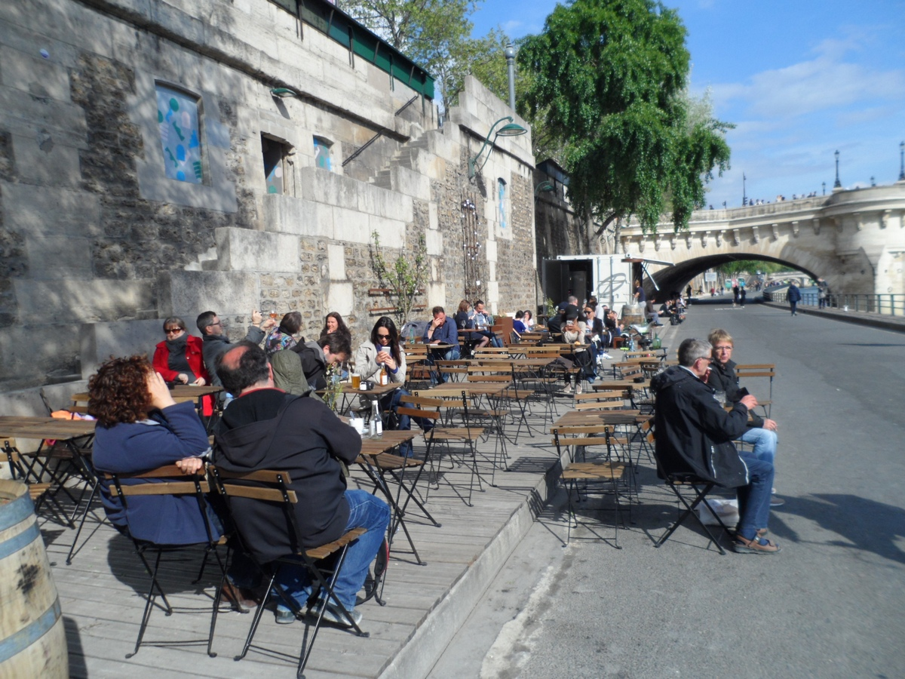

Picture shows the steps leading from Pont Neuf (opposite the Samaritaine) where your promenade can begin. There is a stall selling snacks here.

There are plenty of long "benches" all along the Parc Rives de Seine.

Stretches of green are few and far between but you can still close your eyes and imagine you are in a park.

A long patch of grass along the Seine River for sun-bathers.

A wooden boat for the little ones to play with.

A wooden structure with netting all over to allow bigger children to play football without disturbing the others.

Where is the park? It's here, not far from the Notre-Dame Cathedral.

Another view of the little park along the promenade.

Little tables and chairs are set up along the Pont Louis-Philippe to face the Seine River.

Tables for picnickers a bit further down near the Pont Marie.